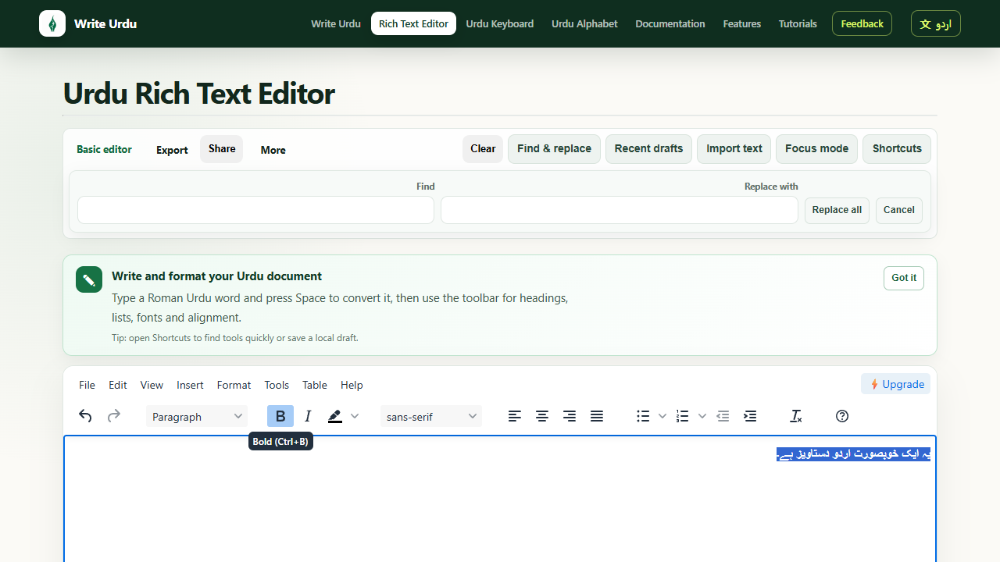
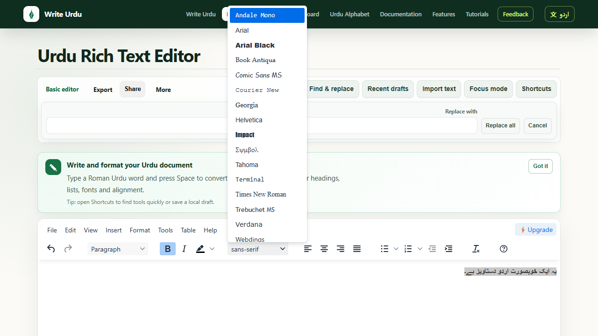
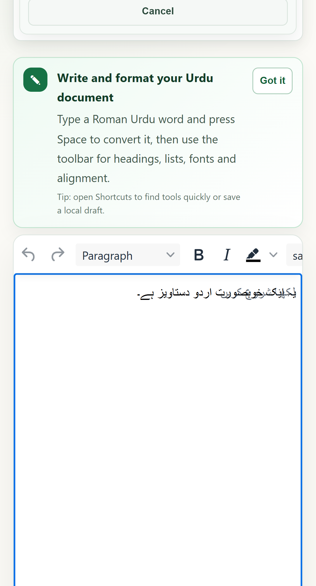

Change the text colour
Colour can distinguish headings, quotations or important terms.
- Select the Urdu words you want to change.
- Open the Text colour control.
- Choose a colour and check the contrast at normal reading size.
RICH EDITOR GUIDE
Write the Urdu first, then refine presentation with fonts, colour, emphasis, size and alignment. The rich editor keeps formatting controls close without changing the underlying Urdu text.
QUICK ANSWER
Open the Urdu Rich Text Editor, type or paste your Urdu, select the text you want to change, and use the toolbar for font family, size, colour, highlight, alignment and emphasis. Preview the finished document before exporting it.
STYLE
Formatting should make Urdu easier to scan, not compete with the writing itself. Start with a clear text hierarchy and add visual emphasis only where it helps.
Colour can distinguish headings, quotations or important terms.
A background highlight works well for reminders or one important sentence.
EMPHASIS
Select text and choose the appropriate toolbar action. Bold is the strongest general emphasis; italic and underline are better used selectively, while strikethrough is useful when something should remain visible but marked as removed.

TYPOGRAPHY
Nastaliq provides the traditional flowing Urdu style, while Naskh is often clearer in compact interfaces, tables and smaller text.
اردو خوبصورت انداز میں لکھیں
Traditional, expressive, ideal for Urdu-first reading.اردو واضح انداز میں لکھیں
Compact and clear for smaller text and structured layouts.
READABILITY
Use larger sizes for headings and smaller sizes for supporting text, while keeping Nastaliq line spacing generous enough for its vertical forms.
Right alignment is the natural default for Urdu paragraphs. Centre alignment can work for short quotes or headings, while left alignment is generally best reserved for English or mixed-direction content.

MOBILE
The editor keeps the document as the primary surface on mobile. Use the toolbar in short bursts, then return to the writing area to review the complete paragraph.
WORKFLOW
Finish the wording before spending time on typography.
Choose heading and body sizes, then select a suitable Urdu font.
Use colour, bold or highlighting only where the reader needs a visual cue.
Check right-to-left layout and font rendering before downloading Word, PDF or PNG.
VIDEO WALKTHROUGH
The written steps above contain the complete guidance; the video is an optional visual walkthrough.
TRY IT